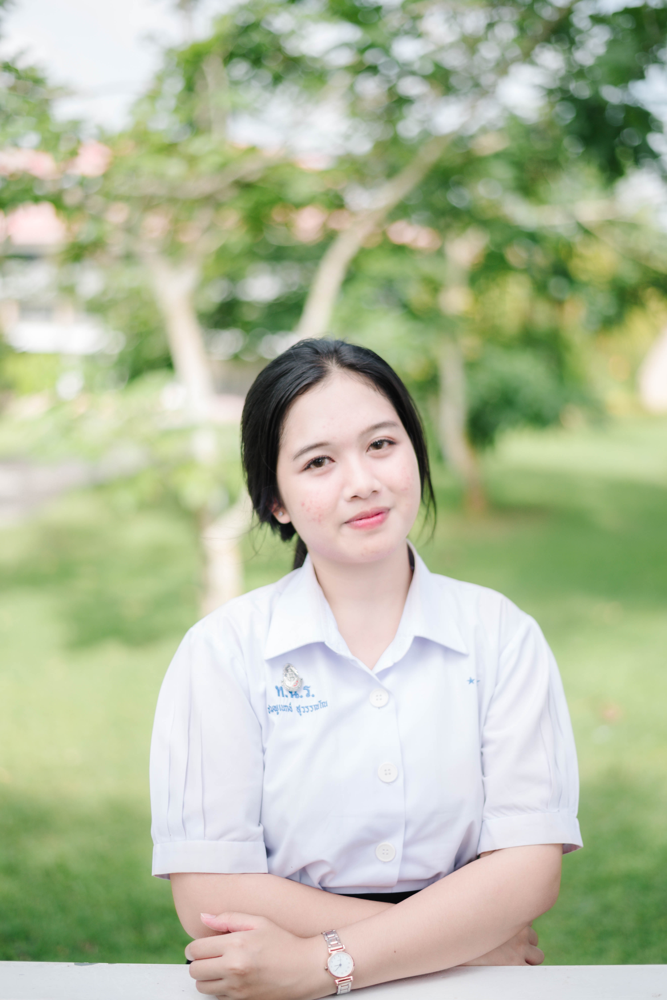

นักเรียนระดับมัธยมศึกษาตอนปลาย
โรงเรียนทุ่งใหญ่เฉลิมราชอนุสรณ์รัชมังคลาภิเษก
เกรดเฉลี่ยสะสม
แฟ้มสะสมผลงาน
ความฝันในอนาคต
โรงเรียนทุ่งใหญ่เฉลิมราชอนุสรณ์รัชมังคลาภิเษก
โรงเรียนทุ่งใหญ่เฉลิมราชอนุสรณ์รัชมังคลาภิเษก
แผนการเรียน ศิลป์ภาษา
มีความกล้าแสดงออก สามารถเป็นผู้นำและรับผิดชอบงานที่ได้รับมอบหมาย
สามารถทำงานร่วมกับผู้อื่น รับฟังความคิดเห็น และช่วยเหลือเพื่อนร่วมทีม
มีความสนใจด้านการวางแผน การจัดระบบ และการบริหารจัดการ
พร้อมเปิดรับความรู้ใหม่ ๆ และพัฒนาตนเองอยู่เสมอ
ผ่อนคลาย
เข้าร่วมกิจกรรมและทำงานร่วมกับผู้อื่น
พัฒนาความเป็นผู้นำและทักษะการสื่อสาร
สาขาบริหารธุรกิจ
การจัดการโลจิสติกส์
เป้าหมายในการศึกษาต่อ คือ การพัฒนาความรู้ด้านการบริหาร การวางแผน การจัดการคลังสินค้า และระบบการขนส่ง เพื่อเตรียมความพร้อมสู่การทำงานในอนาคต
ฉันเป็นคนที่มีความมุ่งมั่น ตั้งใจ และพร้อมเรียนรู้สิ่งใหม่ ๆ อยู่เสมอ ฉันมีความสนใจในด้านการบริหาร การวางแผน และการจัดการ รวมถึงชื่นชอบการทำงานที่ต้องใช้ความคิดและความรับผิดชอบ จึงมีความตั้งใจที่จะศึกษาต่อในสาขาการจัดการโลจิสติกส์ เพื่อพัฒนาความรู้และทักษะของตนเอง และนำไปประยุกต์ใช้ในการประกอบอาชีพในอนาคต
เเข่งวันอาเซียน , เเข่งวันสังคัม
กิจกรรมปลูกป่า , จิตอาสา ๆ